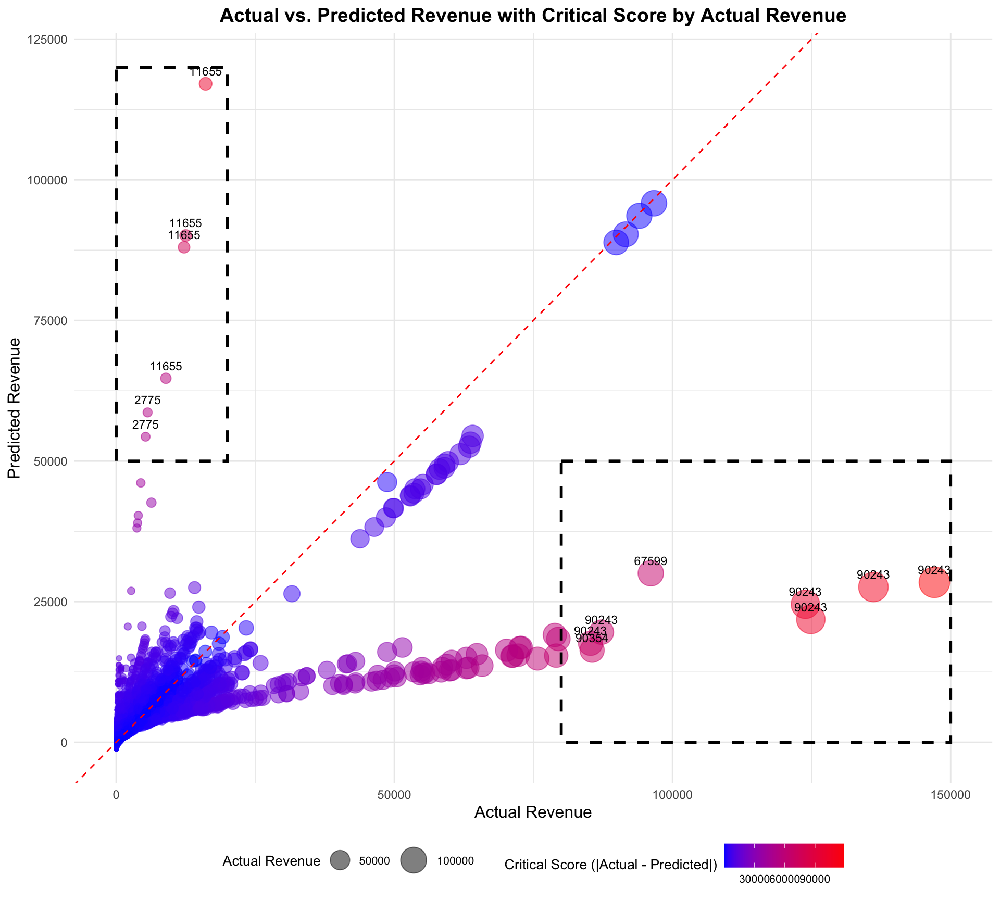

Question 2: What areas/products should we invest to increase revenue. What Products are doing well and what could be improved? Propose 2-3 specific recommendations that could address these opportunities. Demonstrate rationale behind each recommendation
Goal of the analysis: Utilize the designed regression model on a test dataset, which is a 20% randomly selected portion of the data, and train the model using the training dataset, which is the remaining 80%. Implement the model on the actual data to predict the revenue for each line item, and compare the predicted revenue with actual sales to identify which products to focus on. Finally, provide recommendations on specific products to invest in for maximum revenue improvement.
Based on the statistical model from the previous question, we identified key variables to focus on to improve revenue: asin, ordered_units, and asp. Now, the task is to dive deeper into the data to determine which areas or products we should invest in to increase revenue.
We can simply plot the top-performing products and categories based on revenue and units sold, which will be done here. However, there are several benefits to utilizing model prediction data instead of relying solely on actual sales data. We use prediction models instead of actual sales data because we don’t know the complete backstory behind the sales data numbers.
For example, a product may have performed poorly due to external factors such as a competitor’s aggressive marketing campaign or a sudden change in consumer preferences. By using prediction models, we can identify products that are underperforming relative to their potential, allowing us to focus on areas that have room for improvement.
In this analysis, we will compare the actual revenue data with the predicted revenue data from the model to identify products with the largest differences between predicted and actual revenue. This will help us pinpoint areas where we can invest to increase revenue.
Benefits of Utilizing Model Prediction Data Instead of Relying on Actual Sales Data
Identify potential issues like stock shortages.
Optimize marketing strategies.
Adjust pricing to match market demand.
Improve product listings to enhance conversions.
Prepare for seasonal demand.
Estimate potential success for new product launches.
# Show the refiend model that I created in the previous questionsummary(refined_model)
Call:
lm(formula = ordered_revenue_amount ~ asin + ordered_units +
asp, data = data_train)
Residuals:
Min 1Q Median 3Q Max
-77609 -597 -203 387 118636
Coefficients:
Estimate Std. Error t value Pr(>|t|)
(Intercept) -1306.511753 94.473524 -13.829 <0.0000000000000002 ***
asin 0.011480 0.001364 8.414 <0.0000000000000002 ***
ordered_units 20.671226 0.205513 100.584 <0.0000000000000002 ***
asp 31.411177 0.966556 32.498 <0.0000000000000002 ***
---
Signif. codes: 0 '***' 0.001 '**' 0.01 '*' 0.05 '.' 0.1 ' ' 1
Residual standard error: 4068 on 11772 degrees of freedom
Multiple R-squared: 0.4845, Adjusted R-squared: 0.4844
F-statistic: 3688 on 3 and 11772 DF, p-value: < 0.00000000000000022
# Add predictions to the datasetdata_test$predicted_revenue <-predict(refined_model, newdata = data_test)# Combine training and testing data for a comprehensive datasetdata_combined <-bind_rows(data_train, data_test)data_combined$predicted_revenue <-predict(refined_model, newdata = data_combined)data_combined %>%head(10) %>% dplyr::select(week_ending, asin, ordered_revenue_amount, ordered_units, asp, marketing_spend, views, predicted_revenue) %>% knitr::kable()
week_ending
asin
ordered_revenue_amount
ordered_units
asp
marketing_spend
views
predicted_revenue
19728
99345
1902.66
95
20.02800
3741
111
2426.7939
19728
91686
224.15
12
18.67917
2309
185
580.7918
19728
90798
437.74
9
48.63778
4781
253
1449.6195
19728
28305
4.95
1
4.95000
1643
1069
-805.4265
19728
52947
13.49
1
13.49000
3206
347
-254.2959
19728
40959
13064.52
597
21.88362
1292
323
12191.7913
19728
57942
612.19
34
18.00559
3432
1876
627.0348
19728
58053
602.36
44
13.69000
1284
408
699.4636
19728
60495
280.14
6
46.69000
3930
1156
978.5589
19728
59385
1816.13
69
26.32072
4519
1673
1628.2810
Now that we have the predicted_revenue column from the regression model, we can categorize the areas that overperformed and underperformed according to the model’s predictions.
# Visualization: Actual vs. Predicted Revenueggplot(data_combined, aes(x = ordered_revenue_amount, y = predicted_revenue)) +geom_point(alpha =0.5) +geom_abline(slope =1, intercept =0, color ="red", linetype ="dashed") +labs(title ="Actual vs. Predicted Revenue",x ="Actual Revenue",y ="Predicted Revenue") +theme_minimal()
1. Predicted Higher but Actual Sales Low
Possible Reasons:
Stock Shortages: Products may have had insufficient stock to meet predicted demand.
Marketing Ineffectiveness: Marketing efforts may not have translated into actual sales.
Product Issues: Issues such as poor reviews, low quality, or unappealing product listings could be deterring sales.
Actions:
Investigate Stock Levels: Ensure that these products are adequately stocked to meet potential demand.
Enhance Marketing Strategies: Re-evaluate marketing campaigns to ensure they are effectively targeting the right audience.
Improve Product Listings: Address any issues with product quality and enhance listings with better descriptions, images, and reviews.
2. Predicted Lower but Actual Sales High
Possible Reasons:
Exceptional Demand: These products might have experienced an unexpected surge in demand.
Successful Marketing: Effective marketing campaigns could have driven higher-than-expected sales.
Seasonal/One-Time Events: The products could have benefited from seasonal trends or one-time events.
Actions:
Examine Sales Trends: Determine if the high sales are due to temporary factors or if they indicate a sustainable trend.
Optimize Stock Management: Ensure these products are consistently in stock to capitalize on their high demand.
Replicate Success: Identify what drove the success and apply similar strategies to other products.
3. Aligned with the Linear Line
Possible Reasons:
Model Accuracy: The model accurately captures the factors driving sales for these products.
Stable Demand: These products may have consistent and predictable demand.
Actions:
Maintain Current Strategies: Continue with the current strategies that are working well.
Monitor for Changes: Keep an eye on any changes in trends that might affect these products in the future.
The plot shown above helps us identify areas where the model predictions are accurate and where they deviate from actual sales. However, we want to assign a critical score to items that significantly affect our revenue. By adjusting the size of the points, we can easily identify these key items.
ggplot(data_combined, aes(x = ordered_revenue_amount, y = predicted_revenue, size = ordered_revenue_amount, color =abs(ordered_revenue_amount - predicted_revenue))) +geom_point(alpha =0.5) +geom_abline(slope =1, intercept =0, color ="red", linetype ="dashed") +labs(title ="Actual vs. Predicted Revenue with Critical Score by Actual Revenue",x ="Actual Revenue",y ="Predicted Revenue",size ="Actual Revenue",color ="Critical Score (|Actual - Predicted|)") +scale_color_gradient(low ="blue", high ="red") +scale_size_continuous(range =c(1, 10)) +# Adjust the range to make points largertheme_minimal() +theme(legend.position ="bottom",plot.title =element_text(hjust =0.5, size =14, face ="bold"),axis.title.x =element_text(size =12),axis.title.y =element_text(size =12),legend.title =element_text(size =10),legend.text =element_text(size =8)) +annotate("rect", xmin =0, xmax =20000, ymin =50000, ymax =120000, color ="black", fill =NA, size =1, linetype ="dashed") +annotate("rect", xmin =80000, xmax =150000, ymin =0, ymax =50000, color ="black", fill =NA, size =1, linetype ="dashed") +geom_text(data = data_combined %>%filter(ordered_revenue_amount <20000& predicted_revenue >50000),aes(label = asin), size =3, vjust =-1, color ="black") +geom_text(data = data_combined %>%filter(ordered_revenue_amount >80000& ordered_revenue_amount <150000& predicted_revenue <50000),aes(label = asin), size =3, vjust =-1, color ="black")

Below are the final recommended products for further examination. Based on the data, these are products with high predicted revenue but low actual revenue and products with low predicted revenue but high actual revenue, significantly impacting overall revenue.
I have categorized these into Focus Area 1 and Focus Area 2.
Focus Area 1: Products with high predicted revenue but low actual revenue. These products likely have potential, but something may be missing to maximize their profit.
Focus Area 2: Products with low predicted revenue but high actual revenue. We need to investigate why these products are performing better than predicted. Understanding the reasons behind their success can help replicate it for other products or minimize risks in the future.
# Filter the dataset based on the plot criteriafiltered_data_high_predicted_low_actual <- data_combined %>%filter(ordered_revenue_amount <20000& predicted_revenue >50000)filtered_data_low_predicted_high_actual <- data_combined %>%filter(ordered_revenue_amount >80000& ordered_revenue_amount <150000& predicted_revenue <50000)# Combine the filtered data with segmentationfocus_area_1 <- filtered_data_high_predicted_low_actual %>%mutate(focus_area ="Focus Area 1 (High Prediction, Low Revenue)",check_items ="Investigate Stock Levels, Enhance Marketing Strategies, Improve Product Listings")focus_area_2 <- filtered_data_low_predicted_high_actual %>%mutate(focus_area ="Focus Area 2 (Low Prediction, High Revenue)",check_items ="Examine Sales Trends, Optimize Stock Management, Replicate Success")# Combine the focus areassegmented_data <-bind_rows(focus_area_1, focus_area_2)# Display the segmented datasegmented_data %>%mutate(week_ending =as.Date(week_ending)) %>%group_by(asin) %>%summarize(focus_area =first(focus_area), check_items =first(check_items)) %>% knitr::kable()